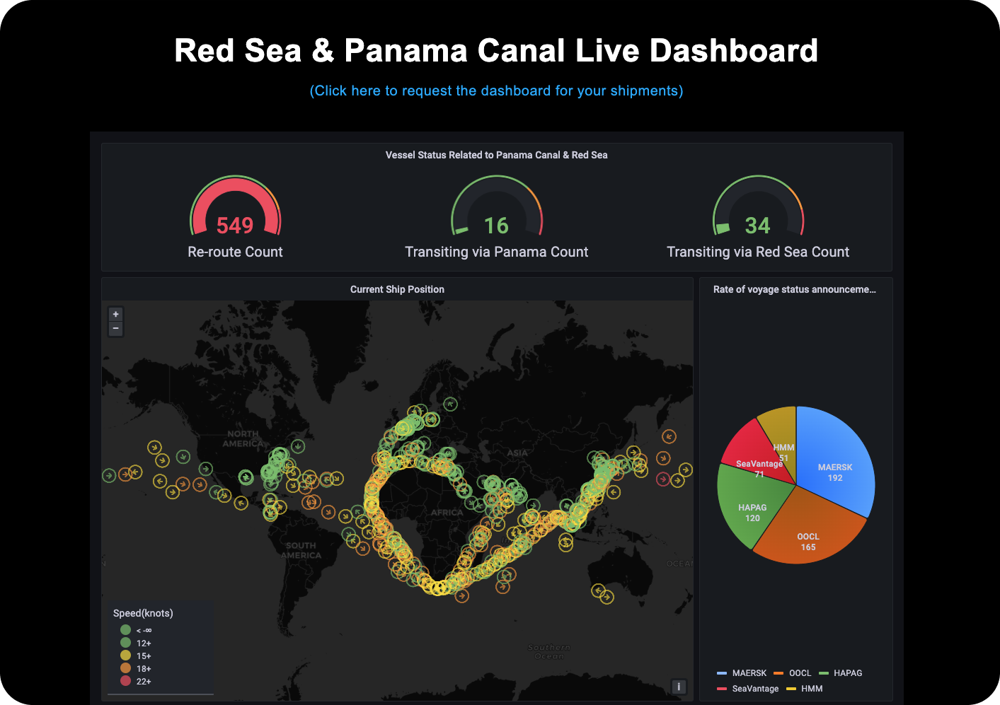
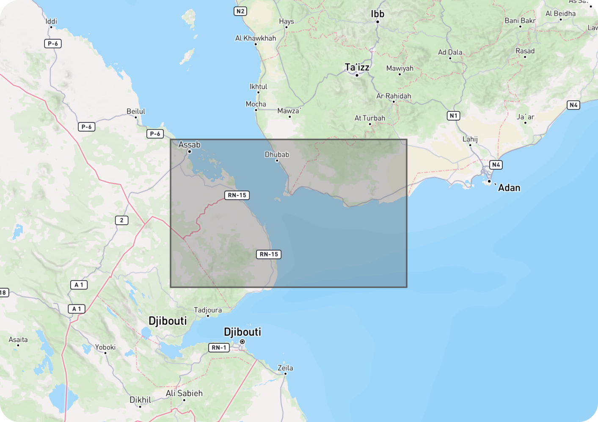
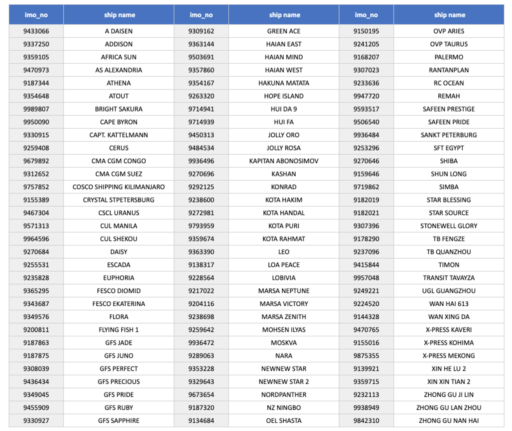

지난 2023년 12월 15일 이후, 아시아와 유럽을 잇는 홍해가 예멘 반군의 공격이 이어지면서 해운사들은 큰 고민에 빠졌습니다. 이 지역은 수에즈 운하를 통과하는 선박들에게 필수적인 경로로, 유럽, 중동, 아시아 간의 물류를 신속하게 이동시킬 수 있어 많은 해운사들이 이 경로를 택하고 있기 때문에 해운사들은 안전을 우선시해야 할지 아니면 더 긴 경로를 선택하면서 추가 비용과 시간을 감수해야 할지에 대해 결정해야 하는 어려운 상황에 놓인 것이죠.
약 549척 이상 희망봉으로 우회저희 씨벤티지팀은 홍해를 회항하고 있는 선박 리스트와 경로 변경, 환승, 경유, 정박 중인 모든 컨테이너 선박의 종합 목록을 ‘맞춤형 대시보드'를 통해 제공해 드리고 있는데요, 약 549척(2월 5일 기준)이 수에즈 운하를 통하지 않고, 아프리카 희망봉을 거쳐가는 우회로를 택하고 있는 것으로 나타났습니다.
 <Red Sea & Panama Canal Live Dashboard 화면> 약 549척 이상 희망봉으로 우회홍해를 거치지 않고 희망봉을 우회하는 경우, 홍해를 통과하여 수에즈 운하를 이용하는 루트와 비교할 때, 희망봉을 우회하는 경로는 약 3,500 해상 마일(약 6,500 킬로미터) 더 길어집니다. 선박의 속도, 날씨 조건, 항로에서의 교통량 등에 따라 다를 수 있지만, 대략적으로 희망봉을 우회하면 7일에서 최대 10일 정도 더 소요될 수 있습니다. 이는 물류 및 공급망 계획에 상당한 영향을 미칠 수 있는 중요한 시간 차이기도 합니다. 이러한 경우 화주는 경로 우회로 인하여 배송시간이 지연되며, 이는 연료 비용, 선박 임대료, 인건비 등이 증가하여 운송 비용의 리스크가 커지게 됩니다.
위험을 감수하는 일부 선박들위험에도 불구하고, 일부 선박들은 여전히 홍해를 통한 운항을 선택하고 있습니다. 정기선을 운항하는 국내 최대 해운사 HMM을 포함한 글로벌 해운선사들이 안전을 위해 아프리카 희망봉으로 우회를 하기로 결정했지만, 부정기선의 경우 화주의 특정 요구에 맞춰 운항을 해주는 구조로 인해 우회로 인한 경제적 손실이 클 수 있어, 일부는 여전히 위험지역을 통과하기로 결정하고 있습니다. 특히, 예멘의 후티 반군이 중국과 러시아 선박에 대한 공격을 면제하겠다고 선언함에 따라, 이러한 국가의 선박들은 상대적으로 더 안전하다고 판단하여 홍해를 통한 운항을 선택하고 있습니다. 이러한 상황에서 리스크와 비용 사이에서 전략적인 결정을 해야 하는 화주들에게 실시간 선박 위치 및 항로 정보는 더욱 중요해졌는데요. 이러한 리스크와 비용 사이에서 전략적인 결정을 해야 하는 화주들에게 실시간 선박 위치 및 항로 정보는 더욱 중요해졌는데요. 이에 저희 팀 씨벤티지는 지난 1월 한달 간 홍해를 통과한 선박들을 알아보았습니다.
 <Ship Insight 선박 위치 추적 화면>  <홍해를 통과한 '컨테이너' 선박 리스트> 물류대란, 대처 방안이번 홍해 사태를 비롯해 공급망의 변동성은 앞으로도 계속 반복될 것으로 예상되는 가운데, 씨벤티지는 화주분들이 불확실한 글로벌 공급망 환경 속에서 현명한 결정을 내릴 수 있도록 선박, 화물, 항구의 실시간 정보를 한눈에 확인할 수 있는 빅데이터를 제공하고 있습니다. 다양한 혼란과 위기 상황에 대비하여 공급망에서 발생하는 모든 상황을 확인하고, 체계적인 대응 계획을 수립해 보세요.